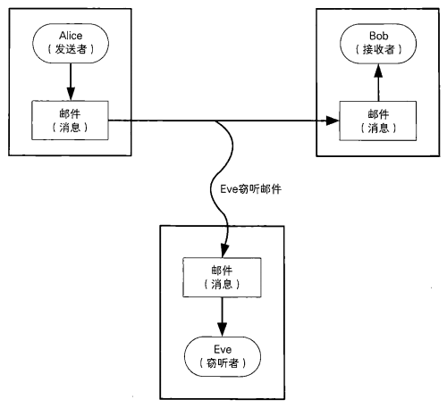
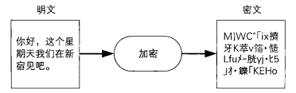
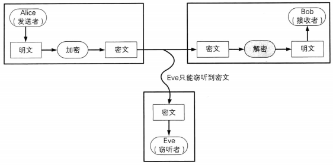
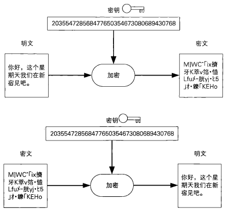
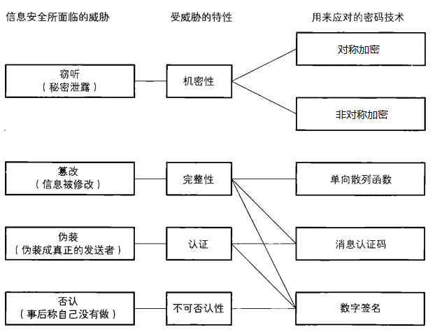

常用密码技术
1.密码
1.1 发送者、接收者和窃听者
假设Alice向Bob发送消息。在这个场景中，发出消息的Alice称为 发送者（sender），而收到消息的Bob则称为 接收者（receiver）。
Alice向Bob发送邮件

消息在互联网上传输的时候，可能被恶意窃听者窃听偷看到。
- Eve（窃听者）看到消息的内容

裸露的消息内容原本应该只有发送者和接收者两个人知道，但是在传输的过程中就存在被第三方知道的风险。
1.2 加密和解密
Alice不想让别人看到消息的内容，于是可以对消息进行加密（encrypt）后再发送出去。
加密之前的消息称为明文（plaintext），加密之后的消息称为密文（cipher-text）。

Bob收到了来自Alice的加密消息，于是Bob需要对密文进行解密（decrypt）之后再阅读。
密文解密之后就变成了原来的明文

将消息加密后发送, 窃听者只能得到密文

1.3 秘钥
1.3.1 密码算法
把明文加密成密文的过程,称为“加密算法”,而密文解密成明文的过程，称为“解密算法”。加密、解密的算法合在一起统称为密码算法。
1.3.2 秘钥
密码算法中需要密钥（key）。就如同现实生活中的钥匙一样，我们要打开锁，必须要用匹配的钥匙。
使用密钥进行加密、解密

1.4 密码信息安全常识与威胁
1.4.1 信息安全常识
- 不要使用保密的密码算法
- 使用低强度的密码比不进行任何加密更危险
- 任何密码总有一天都会被破解
- 密码只是信息安全的一部分
不要使用保密的密码算法
这样做的原因主要有以下两点：
密码算法的秘密早晚会公诸于世
从历史上看，密码算法的秘密最终都会被暴露出来。例如: RSA公司开发的RC4密码算法曾经也是保密的，但最终还是有一位匿名人士开发并公开了与其等效的程序。
公开的算法从一开始就没有设想过要保密，因此算法的暴露丝毫不会削弱它们的强度。
开发高强度的密码算法是非常困难的
- 要比较密码算法的强弱是极其困难的，因为密码算法的强度并不像数学那样可以进行严密的证明。密码算法的强度只能通过事实来证明，如果专业密码破译者经过数年的尝试仍然没有破解某个密码算法，则说明这种算法的强度较高。
- 现在世界上公开的被认为强度较高的密码算法，几乎都是经过密码破译者长期尝试破解未果而存活下来的
- 试图通过对密码算法本身进行保密来确保安全性的行为，一般称为隐蔽式安全性（securitybyobscurity），这种行为是危险且愚蠢的。
- 反过来说，将密码算法的详细信息以及程序源代码全部交给专业密码破译者，并且为其提供大量的明文和密文样本，如果在这样的情况下破译一段新的密文依然需要花上相当长的时间，就说明这是高强度的密码。
使用低强度的密码比不进行任何加密更危险
一般我们会认为．就算密码的强度再低，也比完全不加密要强吧？其实这样的想法是非常危险的。
正确的想法应该是：与其使用低强度的密码，还不如从一开始就不使用任何密码这主要是由于用户容易通过“密码”这个词获得一种“错误的安全感”。对于用户来说，安全感与密码的强度无关，而只是由“信息已经被加密了”这一事实产生的，而这通常会导致用户在处理一些机密信息的时候麻痹大意。
任何密码总有一天会被破译
如果某种密码产品宣称“本产品使用了绝对不会被破解的密码算法”，那么你就要对这个产品的安全性打个问号了，这是因为绝对不会被破解的密码是不存在的。
无论使用任何密码算法所生成的密文，只要将所有可能的密钥全部尝试一遍，就总有一天可以破译出来。因此，破译密文所需要花费的时间，与要保密的明文的价值之间的权衡就显得非常重要。
密码只是信息安全的一部分
我们还是回到Alice给Bob发送加密消息的例子。即便不去破解密码算法，也依然有很多方法能够知道Alice所发送的邮件内容, 例如:
攻击者可以不去试图破译经过加密的邮件，而是转而攻击Alice的电脑以获取加密之前的邮件明文。
上面提到的攻击手段，都与密码的强度毫无关系。要保证良好的安全性，就需要理解“系统”这一概念本身的性质复杂的系统就像一根由无数个环节相连组成的链条，如果用力拉，链条就会从其中最脆弱的环节处断开。因此，系统的强度取决于其中最脆弱的环节的强度。
最脆弱的环节并不是密码，而是人类自己。
1.4.2 密码信息威胁
我们将信息安全所面临的威胁与用来用对这些威胁的密码技术直接的关系用一张图标来表示出来。
